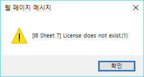
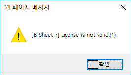
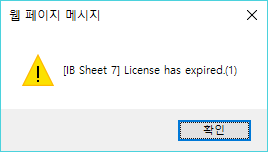

License정책 및 라이선스 경고 메시지 발생시 대응 방안에 대하여 정리해보았습니다.
License 체크 기준
IBSheet는 화면이 호출되는 시점에 사용이 가능한 시트인지 라이선스 체크를 하고 있는데요, 브라우저의 url정보를 기준을 두고 있습니다. (주소값이 localhost 및 127.0.0.1인 경우는 사용을 허용 함)
사용자가 호출한 주소 값이 www.naver.com 일 경우 "www.naver.com"주소가 포함된 라이선스 키를 발급 받아야 합니다. 더불어 운영되는 페이지에 대한 접속 경로가 여러 개일 경우 모든 주소가 포함된 라이선스 키를 발급 받아야 됩니다. 라이선스 요청시 주소값을 기재할 경우 주소값의 포트 유무에 따른 포트 번호 및 프로토콜이 http인지 https인지까지 정확히 기재해주셔야 합니다.
만약 시트가 생성된 페이지 호출시 해당 url주소가 라이선스 키에 포함되지 않은 경우 "라이선스 경고 메시지" 경고창을 발생시키게 됩니다. (경고 메시지만 발생할 뿐 사용자체는 하실 수 있습니다.)
License 적용 방법
발급받은 라이선스 키를 자바스크립트 변수에 넣는 것기만 하면 바로 반영 됩니다. 자바스크립트 변수는 제품이 배포될 때 포함되는 ibleaders.js 파일에서 확인해볼 수 있습니다.
/*
* http://www.ibleaders.co.kr
* Call (02)2621-2288~9
*
* Copyright 2015 IB LEADERS CO. LTD.
*/
var ibleaders;
ibleaders = ibleaders || {};
ibleaders = {
/**
* licenseType
*
* enum [ "file", "value" ] default 'value'
*
* file로 사용할 경우 licenseType 을 명시하고 해당 프로퍼티 value로 "file" 을 설정한다.
*
*/
/**
* license
*
* licenseType이 "value" 일 경우 라이선스 값을 기입한다.
* licenseType이 "file" 일 경우 라이선스 파일 명을 기입한다.
*/
// license: "license",
license: "W2FtSztPKC9wZDYyYjJxbj1POVx2D2IyOSdsJHIhay0iLFc6RzNNJXRsMQ=="
};
※ 라이선스 키를 적용한 이후에도 라이선스 경고 메시지가 계속 발생할 경우 브라우저 캐시를 삭제 해주시기 바랍니다.
라이선스 경고 메시지 발생시 원인과 조치 방법
해당 내용은 7.0.13.56 이후 버전을 기준으로 설명을 하고 있으며 이전 버전에서는 메시지가 상이할 수 있습니다.
localhost 및 127.0.0.1이외의 주소값으로 페이지가 호출되었을때 해당 페이지에 ibsheet가 있는 경우 상황에 따라 라이선스 경고 메시지를 발생시킬 수 있습니다.
각 경고메시지별로 어떻게 조치해야하는지는 아래 내용을 참고해주시기 바랍니다.
[제품 별로 라이선스가 없는 경우 경고 메세지]

괄호안의 숫자는 제품의 종류를 의미 합니다. (1: ibsheet, 2: ibchart, 3:그외 제품)
[라이선스가 있으나 현재 접속된 URL과 일치 하지 않은 경우]
IBSheet7 제품은 javascript의 전역 변수 ibleaders 안에 license 속성 값을 라이선스키로 사용합니다. 따라서 이 변수가 없거나 이 변수의 내용이 (주)아이비리더스 로 부터 발급받은 내용과 일치하는지 확인이 필요합니다.

[개발서버에 대한 라이선스가 만료된 경우]
운영서버가 아닌 개발서버에 대한 라이선스는 일반적으로 발행일로 부터 90일에서 365일 정도 사용할수 있게 기간제한으로 발행됩니다. (개발서버에 대하여 별도 구매시 예외) 따라서 이 기간이 지난 후에는 아래와 같은 메세지가 출력됩니다.

[라이선스 유효기간과 제품의 버젼이 일치하지 않는 경우]
운영라이선스의 경우, 라이선스를 발행한 일자를 기준으로 약 1년 6개월(545일) 이내에 출시되는 제품은 자유롭게 사용 가능하지만, 그 이후에 출시되는 제품으로 업그레이드 하시는 경우에는 아래와 같은 메세지가 출력됩니다.
이 경우 운영라이선스를 다시 발행 받으셔야 합니다.(최신 제품의 사용 가능 여부는 유지보수 계약을 다릅니다.)